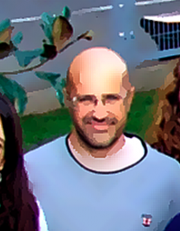
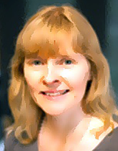

Plenary and Invited Speakers
Confirmed Invited Speakers
Provisional list

Gertjan Koster
“Perspectives for applications of ultimate (atomic) control of oxide films using PLD”

Carlos Frontera
“Structure solving and refining, and strain gradients mapping in epitaxial thin films by X-ray diffraction techniques”


Judith Driscoll
“Atomic layer deposition of oxides: benefits, challenges and future directions”
Ismail El Baggari
”Electron microscopy and spectroscopy of electronic states at oxide interfaces: current state and future prospects”